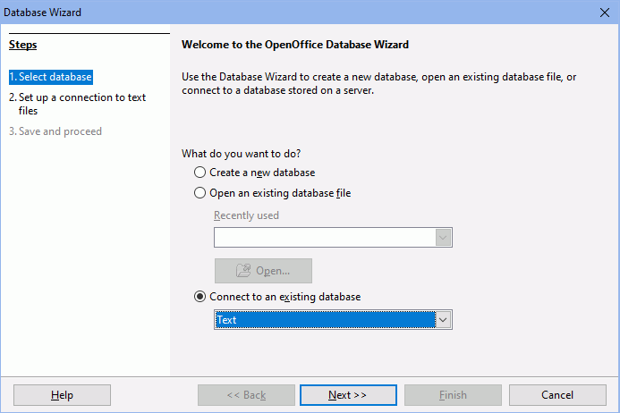

OpenOffice.org Form Letter
These steps are provided as a courtesy. Open Dental support technicians do not assist with Open Office Form Letters.
Users can either do a query and export the result or link directly to the database.
The instructions provided may be for a different version of OpenOffice than in use by your office, so steps may differ depending on the version of OpenOffice.
Query Export
Users can perform a User Query from within Open Dental and export the resulting table. It will normally be saved as a text file in the OpenDentalExports folder on the local C:\ drive. The first row of the text file will contain the names of the columns, and the fields are separated by tabs. This makes it easy to open in OpenOffice.org. Once the text file has been created, use the following instructions to use it as a datasource for a form letter.
Open a new database in OpenOffice.org.

Select the last option as shown and change the type to Text. Click Next. 
Browse to the path where the text file is located. Users will choose the folder path, not the file. So it makes sense to use the OpenDentalExport folder which is the same one set up in Data Paths. The result will be that this connection will also work for any future text files users may save to the OpenDentalExport folder. Also, change the field separator to {Tab} as shown above.
The next window gives users the opportunity to save the connection details as an .odb file. Users can save the file anywhere they wish, including the OpenDentalExport folder.
Open a new or existing template document in the word processing portion of OpenOffice.org. Once the document is open, go to Tools, Mail Merge Wizard. The wizard has 8 steps. On step 3, users will be attaching the datasource created above.

Look at the name of the current address list. The name should match the datasource created earlier. If this needs to be changed, use the button above to select a different address list. Then, make sure the address in box 4 looks correct.
Users may need to match fields. To do so, click Match Fields.... Select the query column name that corresponds to the Open Office address element.

On step 6, users can edit the letter document or template. Click Edit Document... to begin editing.

To insert database fields click Insert, Fields, Other. This can also be done prior to starting the mail merge wizard. Users can leave this window floating over the main window as they work, inserting field names as placeholders. Only insert fields from one table or file within the same letter.

Once any edits are complete to the letter. Click Return to Mail Merge Wizard to complete the remaining steps.
During the final step of the Mail Merge Wizard, users will be able to print, email, or save the created letters..
Mail merge is complex, but it is very powerful. There are many other techniques and features users could take advantage of to generate quality merge letters. See the instructions for OpenOffice.org to learn more about those other features.
From here users can print form letters. There are many other options and features in OpenOffice.org that will enable users to create high quality form letters. There are templates, variable fields, hidden text, etc.
Direct Link
Another way to use the data is to directly link to the database. Users would not normally need to do this since the text export is simpler, but here are instructions in case they need to.
- Set up the ODBC data source on the computer where users want to access the data.
- Open a new Text Document and the Data Sources as shown above.
- Select the database type as ODBC and use the search button at the right to select Open Dental from the list.